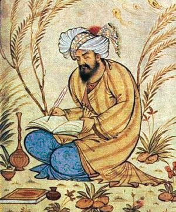

SVG RESOURCE
Rumi Visual Resource
A visual resource designed to help illustrate an important aspect of Rumi's philosophical thought.
Open Full SizeA clear, sourced guide to Rumi's life, his philosophy of divine love, fana and baqa, Shams of Tabriz, and the whirling dervishes.
Rumi (1207–1273) was a Persian poet, Islamic jurist and Sufi mystic who taught that intense love for God (ishq) is the most direct path to union with the divine. After meeting the wandering mystic Shams of Tabriz in 1244 he became an ecstatic poet. His masterpiece, the six-book Masnavi, and his followers' whirling ceremony, the sama, made him one of the most widely read Sufi voices in history.

umi, whose full name was Jalal ad-Din Muhammad Rumi, was a Persian poet, Islamic scholar, and Sufi mystic who lived from 1207 to 1273 CE. He is remembered as one of the most influential figures in the history of Sufism, the mystical tradition within Islam, and as the inspiration behind the Mevlevi Order, popularly known in the West as the Whirling Dervishes. Rumi is especially associated with a philosophy centered on divine love, or ishq, which he treated not as an ordinary human emotion but as the most direct and transformative path toward union with God. Rather than approaching religious truth primarily through legal reasoning or formal theological argument, the philosophy expressed throughout Rumi's poetry insists that intense, consuming love for the divine can dissolve the limitations of the ego and draw the soul back toward its true spiritual origin. Trained originally as a respected Islamic jurist and theologian, Rumi underwent a profound spiritual transformation in midlife following his encounter with the wandering mystic Shams of Tabriz, an encounter that redirected his life's work toward the composition of mystical poetry. His major works, especially the six-volume Masnavi and the lyrical Diwan-e Shams-e Tabrizi, remain among the most widely read works of Persian literature and Islamic mysticism to the present day.
Because Rumi expressed his philosophy chiefly through poetry rather than systematic prose treatise, scholars continue to debate the precise philosophical structure underlying his teaching, even while broadly agreeing on its central themes. His importance nonetheless remains foundational to Sufi philosophy, and his poetic exploration of love, longing, and union with the divine has secured him an extraordinarily wide readership across many languages and religious traditions. . Its centre is divine love: the soul longs to return to the source from which it was separated, and love is what carries it home. Scholars of Islamic philosophy still debate how far this poetic vision can be systematized alongside thinkers such as Ibn Arabi.
| Fact | Detail |
|---|---|
| Full name | Jalal ad-Din Muhammad Rumi (Balkhi; Mevlana) |
| Lived | 1207 – 17 December 1273 |
| Born | Balkh (present-day Afghanistan); some scholars argue for Wakhsh (Tajikistan) |
| Died / buried | Konya (present-day Turkey); tomb in the Mevlana Museum, under the Green Dome |
| Tradition | Sufism; medieval Islamic philosophy and mysticism |
| Major works | Masnavi-ye Ma'navi (6 books, roughly 25,000 couplets); Diwan-e Shams-e Tabrizi |
| Core idea | Divine love (ishq) as the path to union with God |
| Key relationship | Shams of Tabriz (met 1244) |
| Legacy | Mevlevi Order; sama ceremony recognized by UNESCO (2008) |
If you want to explore Rumi's philosophy in greater depth, visit our Rumi reading guide, which brings together recommended translations, commentaries, and scholarly works to help you read and interpret his ideas in context.And for quotes visit our Rumi quotes page for a curated selection of his most famous and insightful sayings.
| Year | Event |
|---|---|
| 1207 | Born, traditionally in Balkh, to the preacher and theologian Baha ud-Din Walad |
| c. 1219 | Family begins its westward migration ahead of the Mongol advance |
| c. 1228 | Family settles in Konya under Seljuk patronage |
| 1231 | His father dies; Rumi succeeds him as teacher of law and theology |
| 1244 | Meets Shams of Tabriz, a turning point in his life |
| c. 1247 | Shams disappears; Rumi's grief becomes poetry |
| c. 1258 | Begins the Masnavi at the urging of Hussam al-Din Chelebi |
| 1273 | Dies in Konya on 17 December |
Rumi's birthplace is traditionally Balkh, but some scholars argue for Wakhsh in present-day Tajikistan. Either way, his family left the region as the Mongols advanced and eventually reached Konya, then a cosmopolitan centre of learning in the Seljuk Sultanate of Rum.To know if he a perian or turkish visitor, read our Rumi: Persian or Turkish? page for a detailed discussion of his cultural and linguistic heritage.
The relationship between Rumi and the wandering mystic Shams of Tabriz stands as one of the most significant and closely studied episodes in the history of Sufi philosophy, since it directly precipitated Rumi's transformation from a respected legal scholar into an ecstatic poet and mystic. Traditional accounts describe Shams as an unconventional and spiritually formidable wandering dervish whose direct, searching questions and intense spiritual presence disrupted Rumi's settled scholarly life, prompting an extended period of intimate spiritual companionship that Rumi's own students and family are said to have viewed with considerable unease and jealousy. The exact circumstances of Shams's eventual disappearance remain historically uncertain, with some traditional accounts suggesting that he was killed by members of Rumi's own household or followers who resented his influence, though the precise historical facts cannot be established with full confidence from the surviving sources
Rather than simply mourning this loss privately, Rumi channeled his grief into extensive poetic composition, and much of the Diwan-e Shams-e Tabrizi is addressed to or written in the voice of Shams himself, reflecting Rumi's belief that after a period of searching, he had come to recognize Shams not merely as an external companion but as a mirror reflecting his own deepest spiritual reality back to him. This relationship illustrates a broader theme in Rumi's philosophy, namely that intense human relationship and spiritual companionship, or suhbat, can themselves become a genuine vehicle for approaching the divine, rather than remaining a distraction from more properly religious concerns.
Ishq is intense, consuming love for God. In Rumi's thought it dissolves the ego and draws the soul back toward its divine source.
Ishq, or intense, consuming love, occupies the central place in Rumi's philosophy, functioning not merely as one spiritual virtue among others but as the fundamental force that drives the entire process of spiritual transformation and return to God. Rumi consistently describes this love as something that overwhelms and ultimately dissolves the ordinary, calculating self, comparing the experience of divine love to fire, to intoxication, and to a kind of madness that appears foolish from the perspective of conventional reason but that Rumi treats as a higher and more direct form of spiritual knowledge.
This philosophy of love allowed Rumi to treat the ordinary experiences of human longing, romantic desire, and the pain of separation from a beloved as genuinely valuable spiritual teachers, since he consistently uses these familiar human emotions as vivid, accessible images for the soul's own yearning for union with the divine. For Rumi, this love is inseparable from action and transformation rather than remaining a private inward feeling alone, since sincere love for God is understood to reshape how a person treats others, approaches suffering, and ultimately relates to the entire created world, treating every encounter as a potential occasion for deeper spiritual awakening.
This love is not private feeling alone: it reshapes how a person treats others and meets suffering. The theme invites comparison with the ascent of love in Plato's Symposium and with the devotional poetry of Kabir and the bhakti of Chaitanya, though each grows from a different tradition.
Fana ("passing away") is the dissolution of the ego-bound self in the presence of God. Baqa ("abiding") is the renewed existence that follows, lived in continuous awareness of the divine. Rumi describes the process through images of burning, melting and dying, treating it as the precondition of a deeper life rather than a loss to be feared.
| Term | Meaning |
|---|---|
| Ishq | Intense, consuming love for God |
| Fana | Dissolution of the limited self before the divine |
| Baqa | Renewed, abiding existence after fana |
| Sama | Ritual music and turning movement as embodied prayer |
| Suhbat | Spiritual companionship between teacher and companion |
Sama, the ritual practice of listening to music and turning in rhythmic, meditative movement, is among the most visually recognizable elements of the tradition associated with Rumi, later becoming closely identified with the whirling dervishes of the Mevlevi Order. Traditional accounts trace the origin of Rumi's own turning to spontaneous moments of spiritual absorption, sometimes described as occurring while he listened to the rhythmic sound of a goldsmith's hammer in the marketplace of Konya, moments in which Rumi is said to have entered a state of ecstatic movement that his followers later understood as a form of embodied prayer.
Within Rumi's broader philosophy, sama functions as a physical enactment of the soul's spiritual journey, with the turning dervish symbolically ascending toward union with the divine while remaining grounded through one hand extended downward toward the earth, expressing the idea that spiritual ascent does not require abandoning one's responsibilities within the created world. Although the highly formalized whirling ceremony now associated with the Mevlevi Order was developed and codified more fully by Rumi's followers and successors after his death, the underlying conviction that music and physical movement could serve as genuine spiritual practice, rather than mere entertainment or distraction, is consistently traced back to Rumi's own teaching and example.
| Thinker | Lived | Main method | Signature idea |
|---|---|---|---|
| Al-Ghazali | 1058–1111 | Theological and autobiographical prose | Reconciling Sufi experience with orthodox faith |
| Suhrawardi | c. 1154–1191 | Technical philosophical system | Illuminationism: knowledge by direct presence of light |
| Ibn Arabi | 1165–1240 | Systematic metaphysical treatises | The unity of being |
| Rumi | 1207–1273 | Poetry, story and lived practice | Divine love as the path to union |
Rumi shares with Suhrawardi the conviction that the deepest truths exceed discursive reasoning, and with Ibn Arabi many mystical themes, but he teaches through story and song rather than formal terminology.
The Mevlevi Order, formally established after Rumi's death, drew its inspiration and organizational structure directly from his teaching, his devoted community of followers in Konya, and the spiritual practices, including sama, that had developed around his example during his lifetime. Leadership of the order passed through Rumi's own family line, beginning with his son Sultan Walad, who played a central role in formally organizing the Mevlevi community and codifying many of its distinctive practices, including the elaborate ceremonial structure of the whirling ceremony practiced by later generations of dervishes. Over subsequent centuries, the Mevlevi Order became an influential institution across the Ottoman world, associated with distinctive contributions to Persian and Ottoman poetry, music, and calligraphy, while continuing to center its spiritual practice on the teachings and poetry Rumi had left behind. Beyond the formal structure of the Mevlevi Order itself, Rumi's poetry achieved an extraordinarily wide readership across many centuries and, more recently, across many languages through translation, making him one of the most widely read poets in the world today, even as scholars continue to emphasize the importance of understanding his work within its original Islamic theological and mystical context.
Many lines shared online as "Rumi" are loose English paraphrases, and some are not from his writings at all. Several popular versions were adapted from earlier scholarly translations rather than made directly from the Persian. Before quoting, check the translator, the book and the verse reference. Read more quotes and translations on our Rumi quotes page.
Look for a named translator and a source (for example Masnavi, Book 1, or a ghazal number in the Diwan). If none is given, treat the line as unverified.
For accuracy, start with William Chittick's The Sufi Path of Love or R. A. Nicholson's Masnavi translation; free renderings are more readable but depart further from the Persian.
| Level | Examples |
|---|---|
| Well attested | Jalal al-Din Muhammad Rumi was born in 1207 and died in Konya in 1273. He became a prominent religious scholar and jurist in Konya, produced the Masnavi and the poetic collection known as the Diwan-e Shams, and had a transformative relationship with Shams of Tabriz after their meeting in 1244. His influence continued through his sons, students, and followers, and the Mevlevi tradition developed around his spiritual and literary legacy after his death. |
| Supported by contemporary or relatively early sources | Important evidence comes from works associated with Rumi's immediate circle and from early biographical traditions, including accounts connected with his son Sultan Walad and his disciple Shams-e Tabrizi. Rumi's own poetry and prose also provide evidence for his religious vocabulary, spiritual concerns, relationship with Shams, and intellectual environment, although literary works should not be treated as straightforward autobiographies. |
| Traditionally reported | A number of famous stories about Rumi come through later biographical and hagiographical traditions. These include detailed accounts of Shams's disappearance or death, stories explaining how Rumi began turning around the pillar associated with his spiritual practice, and numerous anecdotes describing encounters with scholars, musicians, rulers, and ordinary people. Such stories can be historically significant because they show how later communities understood and remembered Rumi, but their individual details should not automatically be treated as independently verified historical facts. |
| Disputed or uncertain | Some biographical details remain uncertain, including the precise circumstances of Rumi's family's movements before his settlement in Anatolia and the exact location of his birthplace, which is variously associated with Balkh or Wakhsh in modern discussions. The precise circumstances surrounding Shams's disappearance are also debated. Scholars likewise differ over how directly later Mevlevi ritual practices can be projected backward onto Rumi himself. |
| Interpretive rather than strictly biographical | Claims that Rumi possessed a fully systematic philosophical doctrine comparable to a formal metaphysical system require interpretation. His works contain substantial theological, mystical, ethical, and metaphysical reflection, but much of it is expressed through poetry, parable, narrative, symbolism, and spiritual instruction rather than through a single systematic philosophical treatise. Modern labels therefore need to be used carefully when describing his thought. |
| Later institutional tradition | The Mevlevi Order should not be understood as an institution that Rumi himself formally established in its later organized form. Rather, the order developed among his followers and descendants after his death and preserved practices, poetry, music, and rituals associated with his spiritual legacy. The famous sema ceremony is therefore best understood within the historical development of the Mevlevi tradition rather than assumed to represent an unchanged practice directly instituted by Rumi. |
The most reliable picture of Rumi comes from combining his own writings with early biographical evidence while distinguishing both from later hagiographical tradition. Rumi's dates, career as a religious scholar in Konya, major works, and importance of his relationship with Shams of Tabriz are substantially better established than the details of many popular stories told about him. His poetry is particularly valuable evidence, but it must be read carefully: a poetic speaker, symbolic story, or mystical image is not necessarily a literal autobiographical statement. The same caution applies to later accounts that present dramatic stories about Shams, Rumi's spiritual transformation, or the origins of Mevlevi practices. This does not mean that such traditions are simply worthless or “false”; rather, they belong to different levels of historical evidence and should be identified accordingly. A historically responsible account of Rumi can therefore preserve the importance of these traditions while making clear which claims are relatively well documented, which derive from later remembrance, and which remain uncertain or disputed.
Rumi is important because he gave some of the most vivid and enduring poetic expression to central themes of Sufi philosophy, particularly the transformative power of divine love and the soul's longing for reunion with its source. His philosophical legacy raises a fundamental question that remains significant for the philosophy of religion and mysticism: Can love itself function as a genuine path to knowledge of ultimate reality, capable of reaching truths that reasoned argument alone cannot fully secure?
This question has continued to resonate across the later history of Sufi philosophy and comparative mysticism, as later thinkers examined how Rumi's poetic account of love, longing, and self-dissolution relates to the more systematic metaphysical frameworks developed by philosophers such as Ibn Arabi and Suhrawardi. Rumi's importance therefore does not depend on resolving every uncertainty surrounding his biography or extracting a single formal philosophical system from his poetry. His significance comes from his enduring capacity to communicate the deepest concerns of Sufi spiritual philosophy through accessible, richly human poetic imagery that continues to reach readers across many cultures and centuries.
Rumi (1207–1273) was a Persian poet, Islamic jurist and Sufi mystic. He wrote the Masnavi and the Diwan-e Shams-e Tabrizi, and his teaching inspired the Mevlevi Order.
Rumi means "of Rum", the Persian and Arabic name for Anatolia, the former Roman (Byzantine) lands where he lived and taught in Konya. His followers called him Mevlana, "our master".
Yes. Rumi was trained as an Islamic jurist and theologian, and his poetry is saturated with Quranic imagery. Scholars stress reading him within Islam rather than as a universal spiritual teacher detached from it.
Rumi wrote in Persian and was born in Balkh, a Persian-speaking region now in Afghanistan. He spent most of his life in Konya, now in Turkey, where he is buried, so Persian, Afghan and Turkish cultures all claim him.
Shams vanished from Konya around 1247. Later tradition says members of Rumi's circle killed him, but the sources do not allow certainty.
Tradition says Rumi turned in spontaneous spiritual ecstasy. His followers later formalized this into the sama ceremony of the Mevlevi Order, symbolizing the soul's ascent toward God.
The Masnavi is Rumi's six-book poem of roughly 25,000 couplets. Through stories, fables and teaching, it explores divine love, spiritual longing and the soul's journey back to God.
For accuracy, try William Chittick's The Sufi Path of Love or R. A. Nicholson's Masnavi translation. Popular free renderings are easy to read but often depart from the Persian.
Explore these supplementary resources for studying Rumi's work, including visual materials and a downloadable study guide.
A visual resource designed to help illustrate an important aspect of Rumi's philosophical thought.
Open Full SizeA visual reference providing additional context for understanding Rumi's philosophical concepts.
Open Full SizeA visual aid offering another way to explore a major theme or concept associated with Rumi.
Open Full SizeUse this PDF as a supplementary study resource for exploring Rumi's life, works, concepts, and philosophical ideas.
This page draws on scholarly biographies, translations and reference works. Readers can use them to verify the dates, works and interpretations discussed above.
Editorial note: Dates marked "c." are approximate and vary between sources. Stories about Rumi's life derive largely from later hagiography and are presented as tradition.
Explore Rumi's life, poetry, philosophy, spiritual thought, and historical context through these detailed guides.
Rumi did not leave behind a systematic philosophical treatise in the manner of some of his contemporaries, yet his poetry achieved a depth and reach that few formal philosophical works have ever matched, carrying his mystical vision across centuries and languages.
Yet the questions associated with Rumi remain fundamental to the philosophy of religion: Can love itself be a form of knowledge? What does it mean for the self to be dissolved and renewed? How can ordinary human longing illuminate the soul's deeper relationship with the divine?
The Sufi tradition he helped shape transformed these questions into a poetic philosophy of extraordinary emotional and spiritual power. Its emphasis on divine love, the dissolution and renewal of the self, and embodied spiritual practice made Rumi one of the most enduring and widely beloved figures in the history of Islamic philosophy.
Explore Islamic & Persian Philosophers